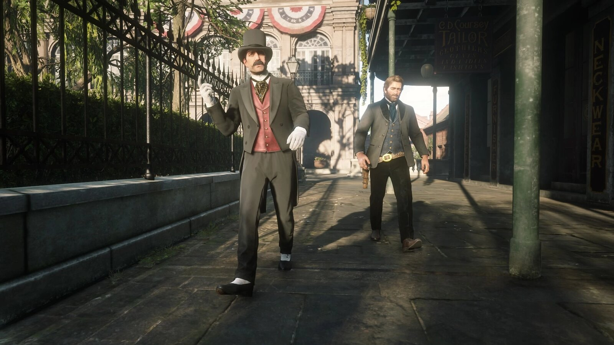
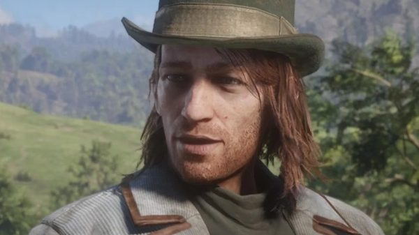
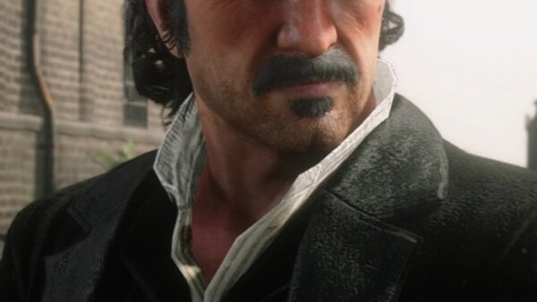
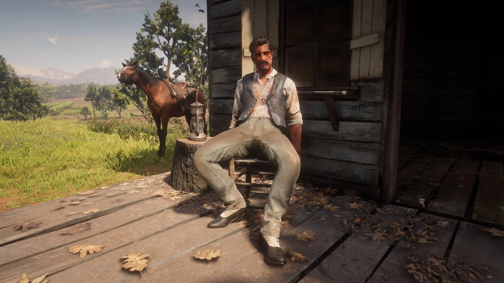

Personnage · Gang Van der Linde
Josiah Trelawny
Josiah Trelawny est un escroc et magicien associé au gang Van der Linde dans Red Dead Redemption 2. D'après le guide officiel, il est libre d'aller et venir dans le gang de Dutch à sa guise.
Il part pour de bon au chapitre 6, et apparaît aussi dans Red Dead Online.
- Affiliation
- Gang Van der Linde (associé)
- Rôle
- Escroc et magicien
- Famille
- Une épouse et deux fils, à Saint-Denis
- Statut
- Quitte le gang en 1899
- Voix
- Stephen Gevedon
- Jeux
- Red Dead Redemption 2, Red Dead Online
Biographie
L'homme des combines
Au chapitre 2, Trelawny apprend à Dutch que des chasseurs de primes retiennent Sean MacGuire. Dans "The First Shall Be Last", il simule un malaise pour distraire les gardes pendant qu'Arthur et Javier approchent, et Sean est libéré.
Au chapitre 3, il tombe deux fois entre de mauvaises mains : dans un fourgon cellulaire dans "The New South", puis aux mains de chasseurs de primes jusqu'à ce qu'Arthur et Charles le libèrent dans "Magicians for Sport". Dans "Friends in Very Low Places", il distrait un chanteur d'opéra pendant qu'Arthur ouvre un coffre, sur un tuyau d'un employé des postes de Rhodes.
Au chapitre 4, dans "A Fine Night of Debauchery", il monte le braquage du bateau à aubes Grand Korrigan. Il fait raser et habiller Arthur pour l'occasion. Le coup, mené avec Arthur, Javier et Strauss, finit en fusillade et en retour à la nage.
Famille et départ
Trelawny a une épouse et deux fils à Saint-Denis, qui ignorent tout de ses activités criminelles. Au début de "The Fine Art of Conversation", au chapitre 6, il quitte le gang pour de bon, avec la bénédiction d'Arthur. La suite de son histoire n'est pas montrée.
Red Dead Online
Dans Red Dead Online, Trelawny vit dans une roulotte près de Rhodes. Il se présente en simulant un suicide, son arme se changeant en oiseau, puis confie au joueur une série de missions, à commencer par le vol d'un cheval de Catherine Braithwaite.
Relations

Arthur Morgan
Son partenaire dans la plupart de ses combines, qui le laisse partir en paix.

Sean MacGuire
Libéré avec son aide au chapitre 2.
Leopold Strauss
Participe à son braquage du bateau à aubes.

Dutch van der Linde
Le laisse aller et venir dans le gang à sa guise.
Conception et interprétation
Trelawny est interprété par Stephen Gevedon, acteur américain, coscénariste et interprète du film Session 9 (2001), vu aussi dans les séries Oz et The Deuce.
Dans un entretien en podcast avec ComiCulture, en octobre 2019, Gevedon raconte avoir ignoré au casting qu'il s'agissait d'un jeu, et s'attendre à une semaine d'enregistrement. Il compare l'accent du personnage à une "mauvaise Katharine Hepburn", un choix fait en partie pour garder Trelawny mystérieux. Rockstar a ensuite étoffé le rôle, en ajoutant sa femme et ses enfants dans les dernières années du développement.
Accueil
Dans Polygon, en novembre 2018, Colin Campbell voit en Trelawny un dandy maniéré, un gentleman cambrioleur élégamment vêtu à l'accent anglais impeccable.
Galerie
